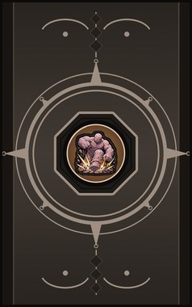
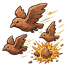
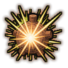
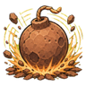
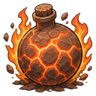
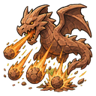
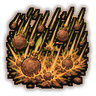
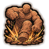

Technique trees › Clans and bloodlines
Toujitakumi clan
9 techniques in the Clan tab.
Needs the Toujitakumi gene.

Explosive Clay: Birds CB
Chakra 15 to 30. Mold small clay birds that fly at the target and explode. Hunter Bombs send a whole flock.
Explosive Clay: Birds CB
Chakra 15 to 30. Mold small clay birds that fly at the target and explode. Hunter Bombs send a whole flock.
Mold small clay birds that fly at the target and explode. Hunter Bombs send a whole flock.
| Rank | Chakra | Cooldown | Class level |
|---|---|---|---|
| C | 15 | 10 s | 3 |
| B | 30 | 20 s | 9 |

Flash Bang D
Chakra 12. A clay charge that bursts with a blinding flash over a small area.
Flash Bang D
Chakra 12. A clay charge that bursts with a blinding flash over a small area.
A clay charge that bursts with a blinding flash over a small area.
| Rank | Chakra | Cooldown | Class level |
|---|---|---|---|
| D | 12 | 15 s | 2 |

Concussion Bomb D
Chakra 15. A clay bomb that knocks everyone in a small area senseless.
Concussion Bomb D
Chakra 15. A clay bomb that knocks everyone in a small area senseless.
A clay bomb that knocks everyone in a small area senseless.
| Rank | Chakra | Cooldown | Class level |
|---|---|---|---|
| D | 15 | 15 s | 3 |

Incendiary Blast C
Chakra 20. A clay bomb packed with fire.
Incendiary Blast C
Chakra 20. A clay bomb packed with fire.
A clay bomb packed with fire.
| Rank | Chakra | Cooldown | Class level |
|---|---|---|---|
| C | 20 | 15 s | 5 |
Clay Missile B
Chakra 35. A long-range clay missile with a heavy warhead.
Clay Missile B
Chakra 35. A long-range clay missile with a heavy warhead.
A long-range clay missile with a heavy warhead.
| Rank | Chakra | Cooldown | Class level |
|---|---|---|---|
| B | 35 | 30 s | 10 |
Kuchi Botsu: Mouth Awakening C
Chakra 20. Open more mouths for half an hour: faster, stronger clay work and a sharper eye for targets.
Kuchi Botsu: Mouth Awakening C
Chakra 20. Open more mouths for half an hour: faster, stronger clay work and a sharper eye for targets.
Open more mouths for half an hour: faster, stronger clay work and a sharper eye for targets.
| Rank | Chakra | Cooldown | Class level |
|---|---|---|---|
| C | 20 | 1.2 hours | 6 |

C2 Dragon A
Chakra 65. A-rank: a clay dragon bombards an area with explosives for six seconds.
C2 Dragon A
Chakra 65. A-rank: a clay dragon bombards an area with explosives for six seconds.
A-rank: a clay dragon bombards an area with explosives for six seconds.
| Rank | Chakra | Cooldown | Class level |
|---|---|---|---|
| A | 65 | 2.8 hours | 14 |

Mass Artillery S
Chakra 90. S-rank: a carpet of explosive clay over a wide area.
Mass Artillery S
Chakra 90. S-rank: a carpet of explosive clay over a wide area.
S-rank: a carpet of explosive clay over a wide area.
| Rank | Chakra | Cooldown | Class level |
|---|---|---|---|
| S | 90 | 4.8 hours | 17 |

C3 Special S
Chakra 110. S-rank: a giant clay statue that levels everything where it lands.
C3 Special S
Chakra 110. S-rank: a giant clay statue that levels everything where it lands.
S-rank: a giant clay statue that levels everything where it lands.
| Rank | Chakra | Cooldown | Class level |
|---|---|---|---|
| S | 110 | 12 hours | 20 |
Chakra is the technique's base cost, the number in its def. In play it is multiplied by the pawn's chakra energy usage multiplier, which traits (chakra artificer 90%, volatile conduit 110%), World of Naruto genes and jutsu enhancements change, so the technique window can show a slightly different number for each ninja. Cooldowns are in-game time, as the technique window shows them, and the pawn's cooldown stat shortens or lengthens them. World of Naruto gives every ninja a base of 100 maximum chakra; genes and traits change it.